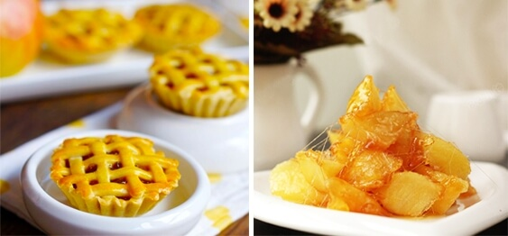

佛经《采兰杂志》云："燕地有苹婆果，味极鲜，夜置枕边，极有香气，即佛书所谓苹婆，华言于思也"。“苹婆果”所言即是苹果。
陕西白水，因其独特的地貌、气候、土壤状况，是国内外专家公认的苹果最佳优生区之一，素有“中国苹果之乡”的美誉，其“白水”苹果也被评为陕西省知名品牌。白水苹果营养价值丰富，它含水分85%左右，糖16.2%，苹果酸0.38%～0.63%，还含有各种维生素和矿物质。
除生食外，还可熟食、腌制、干制、烤制，以及加工成罐头、蜜饯、果酱、果汁、果酒、果醋等佳品。
陕西旭辉缘果蔬有限责任公司地处白水，集苹果种植、收购、包装、加工、储藏、销售为一体，拥有冷储保鲜库17座，储藏总量达5100吨苹果。其旗下的“旭辉缘”品牌始创于2014年，致力于为消费者提供美味、绿色、健康的优质白水有机苹果。“旭辉缘”白水有机苹果以“个大、色艳、香甜、细脆、耐储藏、无污染”为特色，成为果品市场上的名牌产品，被消费者誉为“黄土高原上的明珠”。
地址：白水县雷牙镇李家卓村
联系人：王金苍
电话：0913-6358777
传真：0913-6358333
手机：13335359777 15289337666